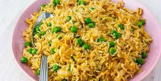

Pilau Recipe

Pilau, also known as pilaf, is a fragrant and flavorful rice dish that hails from various cultures, particularly in East Africa and the Middle East. It's made with basmati or long-grain rice, spiced meat, and aromatic vegetables, making it a perfect one-pot meal.
Ingredients
- 2 cups basmati rice
- 1 lb chicken or beef, cut into bite-sized pieces
- 1 large onion, finely chopped
- 2 garlic cloves, minced
- 1 inch piece of ginger, grated
- 2 medium tomatoes, chopped
- 2 cups of chicken or vegetable broth
- 1/4 cup vegetable oil or ghee
- 1 tsp cumin seeds
- 1 tsp coriander powder
- 1/2 tsp garam masala
- Salt and pepper to taste
- Fresh cilantro or parsely for garnish
- Optional: 1/2 cup peas or carrots
Instructions
- Wash the basmati rice under cold water until the water runs clear. Soak for about 30 minutes, then drain
- In a large pot, heat the oil over medium heat. Add cumin seeds and let them sizzle for a few seconds. Then add the chopped onion and sauté until golden brown
- Stir in the garlic, ginger, and meat. Cook until the meat is browned. Add the chopped tomatoes, coriander powder, turmeric, salt, and pepper. Cook until the tomatoes soften.
- Add the soaked rice to the pot and stir gently to mix. Pour in the broth, ensuring it covers the rice. Bring to a boil.
- Once boiling, reduce the heat tto low, cover, and simmer for about 20 minutes, or until he rice is cooked and the liquid is absorbed.
- Fluff the pilau wih a fork, sprinkle with garam masala, and add peas or carrot if using. Garinish with fresh cilantro or parsely before serving